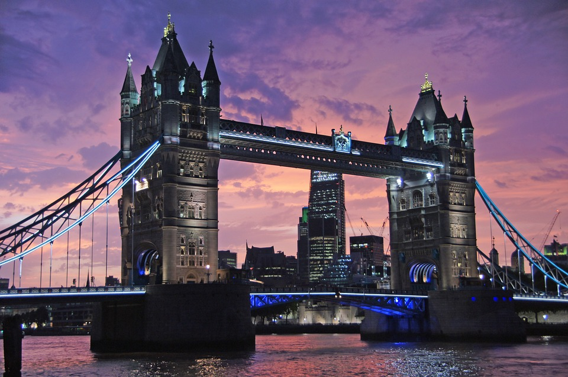

I'm Victoria, and this is my personal space on the internet where I share my thoughts, experiences, and passions. Whether you're here to read about me, get inspired, or simply enjoy some good reads, I'm glad to have you!
Feel free to explore, leave comments, and connect with me. Happy reading!
About me
My name is Victoria Alagjozvska. I'm a 20-year-old student from Berovo, a place known for its serene landscapes and warm community. Life in Berovo has always been peaceful and nurturing, surrounded by nature's beauty and the simplicity of small-town living.
As I embarked on a new chapter of my life, I moved to Skopje to pursue higher education. I am currently in my first year of college, an exciting journey filled with new experiences and endless opportunities for growth and learning. The bustling city of Skopje, with its vibrant culture and dynamic atmosphere, has been a significant change from the quiet charm of Berovo. Yet, this contrast has enriched my life, broadening my horizons and helping me adapt to new challenges.
However, as I transitioned to Skopje for higher education, I encountered a dynamic and vibrant cityscape that starkly contrasted with the tranquility of Berovo. Skopje greeted me with its bustling streets, diverse cultural tapestry, and a sense of boundless energy that permeates every corner. The city's rich history, reflected in its architecture and public spaces, adds a layer of depth to my everyday experiences here. Living in Skopje has not only expanded my academic horizons but also allowed me to immerse myself in a new and exciting lifestyle, fostering personal growth and a deeper understanding of the world around me.
Hobbies
Outside of my academic life, I have a range of hobbies that I am passionate about. These activities not only provide a balance to my daily routine but also serve as avenues for creativity and relaxation.
Photography: Capturing moments through the lens of my camera is a hobby that I cherish deeply. It allows me to see the world from different perspectives and appreciate the beauty in everyday life.
Traveling: Exploring new places, meeting new people, and experiencing different cultures is something that excites me. Each journey is a new adventure filled with learning and memories.
Reading: Whether it's fiction, non-fiction, or academic literature, reading is a way for me to expand my knowledge and escape into different worlds.
Cooking: Experimenting with recipes and ingredients in the kitchen is both a relaxing and rewarding experience for me. It’s a way to express creativity and enjoy delicious meals.
Places
Paris
My visit to Paris was a dream come true. From the breathtaking Eiffel Tower to the charming streets of Montmartre, every moment was magical. The city's rich history, art, and cuisine left a lasting impression on me.

London
London's blend of modernity and tradition is captivating. Visiting landmarks like the Tower of London and the British Museum, along with enjoying the vibrant city life, made my trip unforgettable.
Work
My part-time job as a waitress at City Pub Berovo has been a fulfilling journey where I've honed my skills in hospitality and customer service. In my role, I am responsible for ensuring a seamless dining experience for guests, from greeting them warmly upon arrival to taking their orders promptly and accurately. I collaborate closely with the kitchen staff to ensure that meals are delivered timely and according to guests' preferences. This experience has not only improved my ability to multitask and prioritize tasks effectively but has also enhanced my interpersonal skills as I engage with customers from diverse backgrounds on a daily basis.
One of the most rewarding aspects of my job is the opportunity to resolve customer concerns swiftly and courteously, turning potential challenges into positive experiences. This has taught me the importance of empathy and proactive communication in providing exceptional service. Additionally, managing busy shifts and coordinating with fellow team members has strengthened my teamwork and leadership abilities. Balancing my work commitments with my studies has been a valuable learning experience, helping me develop resilience and time management skills that are crucial for both my academic success and professional growth in the hospitality industry.